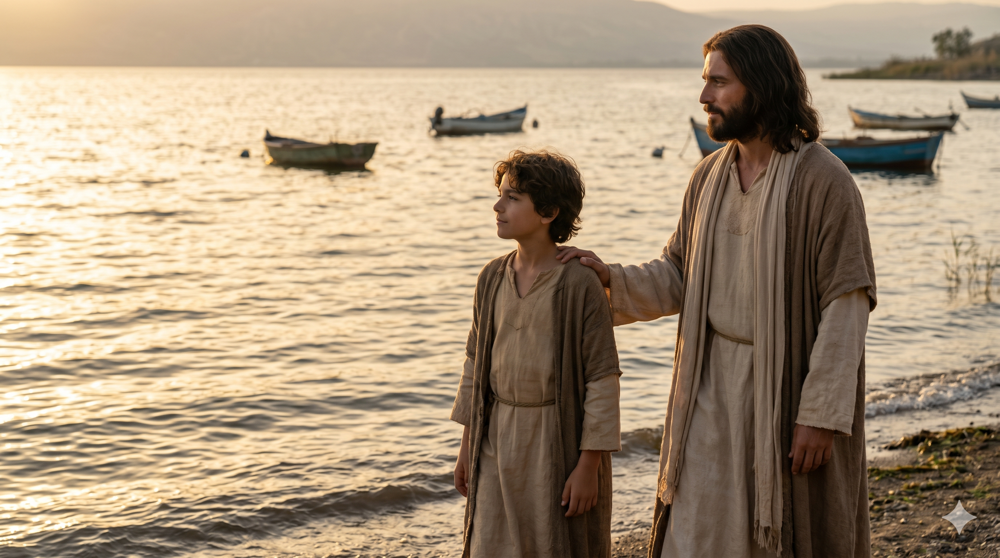

산헤드린 공회 앞의 베드로와 요한 — 학문은 없으나 예수와 함께 있었음이 드러나는 두 어부
"그들이 베드로와 요한이 담대하게 말함을 보고 그들을 본래 학문 없는 범인으로 알았다가 이상히 여기며 또 전에 예수와 함께 있던 줄도 알고" — 사도행전 4:13
산헤드린 공회는 당시 유대 사회에서 가장 학식 높은 사람들의 집합체였습니다. 대제사장, 장로, 서기관, 율법 교사들 — 이들은 수십 년간 율법을 연구하고 논쟁을 이어온 전문가들이었습니다. 그런 그들이 베드로와 요한 앞에서 당혹스러움을 감추지 못했습니다. 두 사람은 갈릴리 출신의 어부, 정규 신학 교육을 받지 못한 평범한 사람들이었는데, 그들의 입에서 흘러나오는 말에는 학자들이 당할 수 없는 담대함과 능력이 있었습니다. 공회는 "이상히 여겼다"고 성경은 기록합니다. 세상의 기준으로는 도저히 설명되지 않는 권위였기 때문입니다.
그들이 발견한 답은 단 한 문장이었습니다. "전에 예수와 함께 있던 줄도 알고." 베드로와 요한의 담대함의 근원은 학문도, 신분도, 능력도 아니었습니다. 오직 예수와 함께한 시간이었습니다. 갈릴리 호숫가에서, 변화산에서, 최후의 만찬 자리에서, 빈 무덤 앞에서 — 그들은 예수와 동행했고, 그 동행이 그들을 바꾸었습니다. 요한에게 있어 이 본문은 특별한 의미를 가집니다. 그는 사복음서의 기자이며 "예수께서 사랑하시는 제자"로 불렸던 사람, 주님의 품에 가장 가까이 기댔던 사람이기 때문입니다.

갈릴리 호숫가에서 예수와 함께 걷는 요한의 모습 — 그 동행이 그를 평생 빚었다
세상은 종종 우리를 자격과 학력과 배경으로 평가합니다. 하나님도 그런 기준으로 사람을 쓰실까요? 이 본문이 주는 대답은 분명합니다. 하나님은 "예수와 함께 있는 사람"을 쓰십니다. 학위보다, 경력보다, 재능보다 예수와의 동행이 먼저입니다. 요한은 학문은 없었지만 사랑하시는 제자로서 예수님 곁을 지켰고, 그 동행이 그를 사복음서 중 하나를 기록한 사람으로, 계시록의 기자로, 에베소 교회의 기둥으로 세웠습니다.
나는 오늘 예수와 함께 있습니까? 바쁜 일상 속에서도 주님 앞에 머무는 시간을 지키고 있습니까? 기도와 말씀, 예배와 묵상의 시간은 단순한 종교 생활이 아닙니다. 그것은 예수와 함께 있는 시간이며, 그 시간이 쌓일 때 나도 모르는 사이 내 삶에서 예수의 향기가 흘러나오게 됩니다. 공회 사람들이 "예수와 함께 있던 줄 알고"라고 말할 때 — 그 한 줄이 요한의 평생을 설명합니다. 내 삶을 설명하는 한 줄은 무엇입니까?
학문이 없어도 됩니다. 배경이 화려하지 않아도 됩니다.
단 하나 — 예수와 함께 있으십시오.
그 동행이 당신의 입에 말을 담고,
당신의 삶에서 설명할 수 없는 빛을 냅니다.